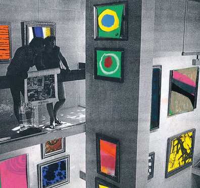

Typography

The typography workshop’s focus is in introducing students to the history and usage of typography as a powerful tool of communication. In his classic book The Elements of Typographic Style, Robert Bringhurst writes: “As a craft, typography shares a long common boundary with writing and editing on the one side, and graphic design on the other, yet typography itself belongs to neither.” This course explores some of the ways that Typography is a perfect place to learn some foundational principles of graphic design: communication, composition, scale, hierarchy, texture, clarity, and expression.
Through a sequence of progressively more complex and challenging projects we will explore the different ways that typography can support, enhance, and subvert the meaning(s) of the texts, words, and phrases it conveys.
Form and Research
In the Form and Research Workshop we will focus on creating images, analyzing their meanings, and looking at ways that graphic design can be used to teach, inform, persuade, and critique. We will also be looking at ways of making images (by hand, photographically, digitally). We will also be looking at different ways of combining type and image, and the ways that sequencing (order) can be used to tell stories.